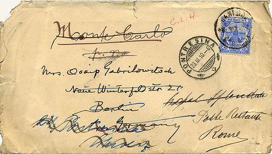
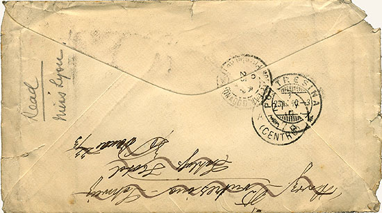

MT addressed this letter to Clara in Berlin, but the envelope's 5 postmarks mean it traveled through at least 4 European cities as it followed her forwarding addresses through Europe, including Monte Carlo and Rome. It looks like the letter left Bermuda on March 8, 1910. MT left Bermuda on April 12. On April 21 he died at Stormfield, the house he talks about in this letter. When Clara finally received the letter is not known. |
|  |
|  |